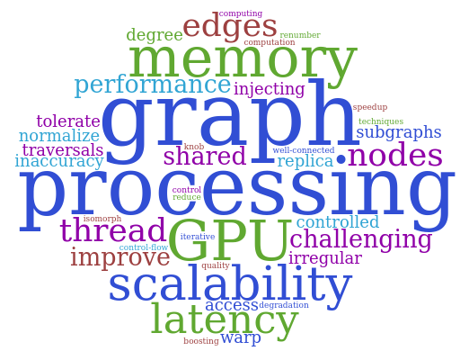

PhD Dissertation
Scalable and Performant Graph Processing on GPU using Approximate Computing
<\p>
"Although this may seem a paradox, all exact
science is dominated by the idea of approximation."
"It is the mark of an instructed mind to rest assured with that
degree of precision that the nature of the subject admits, and
not to seek exactness when only an approximation of the
truth is possible. "
Abstract:
My dissertation research focused on accelerating parallel graph processing using approximate computing. I designed techniques for improving the efficiency of graph analytics on Graphics Processing Units (GPUs) by trading-off computational accuracy.
When the graph sizes are huge (e.g., billion-scale networks), or the underlying processing is expensive, it is not always feasible to compute the exact solution in time. A practical question to ask in such scenarios is: "given an infrastructure, how to make the best use of resources to obtain an acceptable, inexact solution in a reasonable time?"
I sought to answer this question by bringing parallelism and approximate computing into a convergent trajectory to make heavy-weight graph computation practical and scalable.
[
PhD thesis]
The tag-cloud provides an accurate representation of my Ph.D. research focus.
